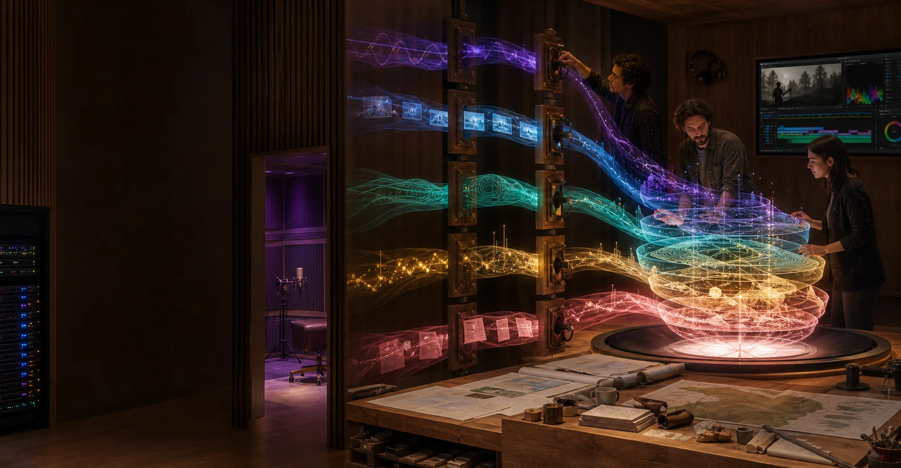

Listen locally
Gather purposes, concerns, existing projects and points of difference. Record who is present and whose perspectives remain to be heard.
Output: a living question map.
The reusable part is a way of asking questions, testing a working version and leaving local choice intact. The equipment, name, relationships, permissions and uses remain different in every place.
The questions, evidence loop and learning travel. Purpose, pace, equipment, language, relationships and connections take a local form each time.
Repeatable questions
Purpose, relationships, workloads, place, people, evidence and connections.
Local answers
Each group writes its own brief in its own words and order.
Living record
The working brief develops through sessions, pilots, corrections and new possibilities.
Blank fields leave every choice with the visitor. Entries stay in this browser tab until copied or downloaded.
Gather purposes, concerns, existing projects and points of difference. Record who is present and whose perspectives remain to be heard.
Output: a living question map.Separate technical access, legal rights, cultural relationships, personal consent, organisational responsibility and public material.
Output: permission dimensions and open questions.Select work people already value or genuinely want to test. Describe inputs, outputs, users, risks and human review.
Output: a defined workload portfolio.Match equipment, storage, power, cooling, access, safety and maintenance to those workloads and the place.
Output: a vendor-neutral reference design.Identify paid roles, training, creative practice, operations, cultural review, maintenance and outside expertise.
Output: a skills and responsibility map.Run grounded pilots and observe real use, energy, time, quality, access and unintended effects.
Output: evidence and corrections.Local participants weigh the evidence and choose to stop, adjust, repeat, expand or connect selected parts elsewhere.
Output: a documented local choice.What is being explored, for whom, and what sits outside scope.
Material, people, purposes, access, custody, review and withdrawal.
Workloads, equipment, place requirements, skills, costs and recovery.
What was tried, what happened, whose view is recorded and what changed.
A node may share a public method, selected output, benchmark, open tool, model component or learning exchange. Every bridge keeps its cargo, source and terms visible.